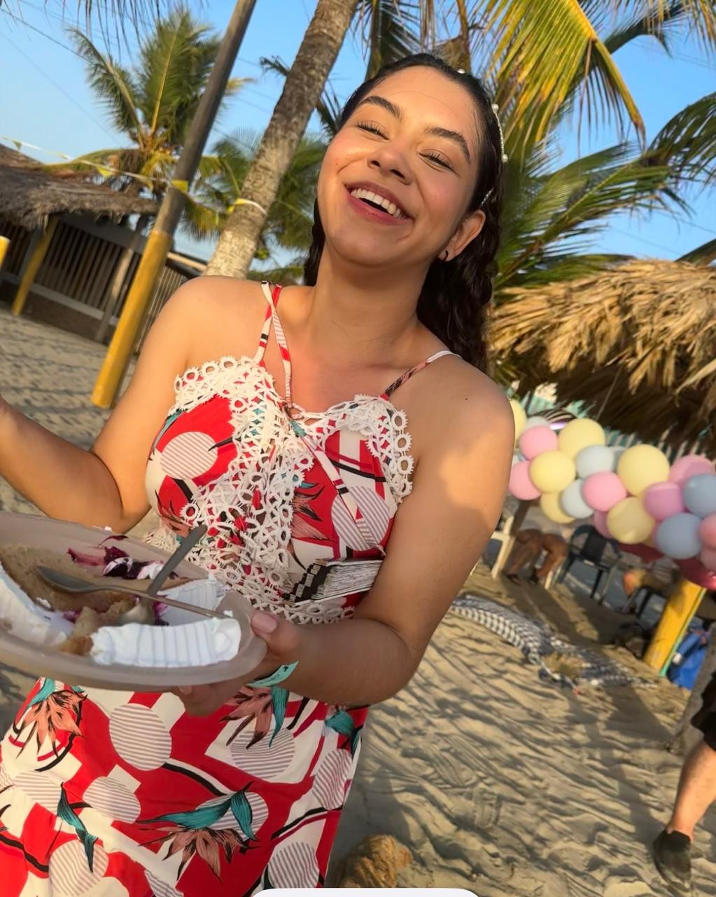

Feliz cumpleaños Yuls
Hay fechas que no se pasan por alto, y la tuya es una de ellas. Hice esto con calma, para que lo recorras a tu ritmo.
Un campo para ti
Los girasoles siempre buscan la luz
Mueve el cursor y mira hacia dónde miran
Tu luz
Entiendes a la gente de verdad
Intentas comprender a los demás aunque nadie te lo pida, y sé que a veces dices que eso pesa. Pero también es lo que te hace tan buena en lo que haces: no juzgas primero, buscas entender, y quienes han pasado por tu consultorio lo sienten: niños, adultos, todos.
Y este año lo hiciste todo a la vez: prácticas, universidad y trabajo, con horarios que a veces te obligaron a soltar cosas que querías. Seguiste firme. Eso no es suerte, es carácter.

Lo que pocos ven
Mucho más que una cara seria
Hay quien te ve seria y se queda ahí. Quien te conoce sabe que eres dulce, tierna, con una fragilidad muy linda y un humor que aparece sin avisar. Carismática sin esfuerzo.
Y curiosa: no descansas hasta saber de dónde era esa canción o dónde leíste aquello. Y haces unos rollos de canela que deberían tener fila.
Deseos
Abre cada girasol
Toca un girasol
0 de 6 abiertos
Tu lado artista
Y por dentro, una artista
En el teatro de improvisación sales de tu zona de confort, te ríes, sientes sin pedir permiso y te conoces un poco más. Después de pasar tanto tiempo sosteniendo a los demás, ese espacio es solo tuyo. Ojalá lo tengas siempre.
Eres como el mar: calma que se siente desde lejos y mucha profundidad por dentro. Ojalá tengas siempre tus noches tranquilas, con tu música, para soltar todo lo que cargas.
Toca el agua
Una cosa más, Yuls
Sé que las cosas entre nosotros no están como antes, y no hice esto para pedirte nada. Es tu cumpleaños, un día importante para ti, y quería que supieras que te deseo, de corazón, el mejor de los cumpleaños. Que lo disfrutes, que te celebren y que te abracen bonito. No tienes que responder nada.
Alan
Que este año te devuelva todo lo bonito que le das al mundo.
Pide un deseo y toca la vela para soplarla
¡Feliz cumpleaños, Yuls!
Volver al inicio12 de noviembre de 2026